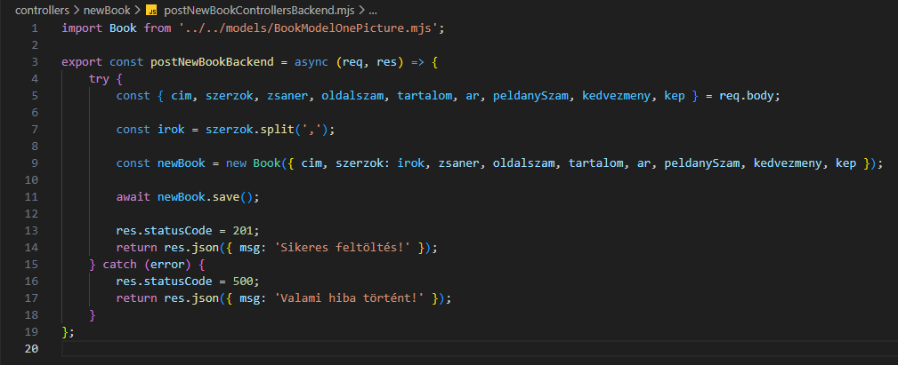

Új könyv felvétele - postNewBookControllersBackend.mjs
Új könyv felvétele - postNewBookControllersBackend.mjs

Ebben a részben szerkesztjük a controllers mappában a postNewBookControllersBackend.mjs állományt, amelyben kidolgozzuk a CRUD Creat művelethez tartozó logikát. Ez megfelel a http POST metódus-hoz tartozó logikának.
-
Szerkesszük a
postNewBookControllersBackend.mjsállományunkat.-
import Book from '../models/BookModelOnePicture.mjs';- aBookmodell alapértelmezett beimportálása. -
export const postNewBookBackend = (req, res) => {...};- hozzuk létre és vigyük ki nevesítve ahttp POST metódus-hoz tartozó logikát (CreataCRUDműveletekből). -
try {... res.statusCode = 201; return res.json({ msg: 'Sikeres feltöltés!' });}- a sikeres ág a 201-eshttp hibakód-dal. -
const {...} = req.body;- areq.bodydekonstrukciója. -
const irok = szerzok.split(',');- szedjük szét a szerzőket egy tömbbe. -
const newBook = new Book({...});- hozzunk létre egy újBookpéldányt areq.body-ból kapott értékekből.
Figyeljünk aszerzok: irokértékre! -
await newBook.save();- mentsük el az adatbázisba. -
catch (error) { res.statusCode = 500; return res.json({ msg: 'Valami hiba történt!' });}- a sikertelen ág a 500-ashttp hibakód-dal.
-